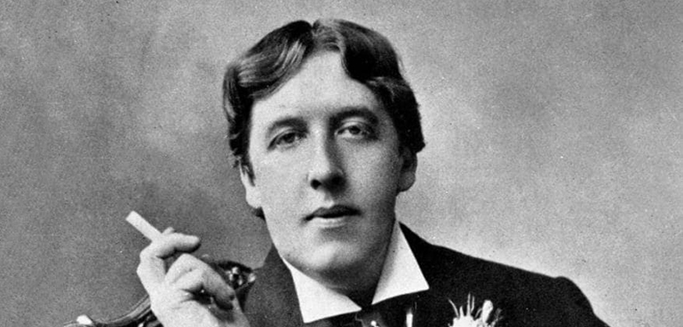

Oscar Wilde w anegdotach
Ksi¹¿ka Oscar Wilde o sztuce i ¿yciu jest prób¹ przybli¿enia refleksji Wilde’a o sztuce i ¿yciu, ukazania ich aktualnoœci, g³êbi, uniwersalnej wartoœci.
W pierwszej czêœci zosta³y wybrane i uporz¹dkowane tematycznie jego wypowiedzi na temat sztuki i ¿ycia (podano je w jêzyku angielskim i polskim t³umaczeniu). Czêœæ druga to omówienie problematyki zawartej w tych s¹dach. Appendix zawiera m.in. szczegó³owe kalendarium, informacje dotycz¹ce adaptacji utworów oraz opinie znanych postaci odnosz¹ce siê do Wilde’a b¹dŸ jego twórczoœci.
Kontakt i zamówienia: mywildbook@gmail.com

Wydawnictwo: WILDBOOK
Rok wydania: 2010
Oprawa: twarda
Format: 205 × 145
Liczba stron: 224
Cena: 42 z³
ISBN: 978-83-930701-0-7
O S£AWNYCH LUDZIACH

Oscar Wilde (przed 1900), fotograf nieznany, Ÿród³o: Wikimedia Commons (modyfikacja w³asna)
Zola i Wilde nie darzyli siê sympati¹. Jedno z przemówieñ Zola zakoñczy³ s³owami: „Niestety pan Wilde bêdzie mi musia³ odpowiedzieæ w swoim barbarzyñskim jêzyku”. Wilde odpowiedzia³ po francusku: „Jestem Irlandczykiem z urodzenia, narodowoœci angielskiej i – jak mówi pan Zola – jestem skazany na wys³awianie siê w jêzyku Szekspira”. Niepochlebnie wyra¿a³ siê Wilde tak¿e o twórczoœci francuskiego naturalisty: „Zola postanowi³ dowieœæ, ¿e skoro nie jest genialny, to potrafi przynajmniej byæ nudny. I to mu siê œwietnie udaje”.

W 1877 roku w swojej recenzji o wystawie w Grosvenor Gallery odniós³ siê do obrazów Jamesa Whistlera, z cyklu „nokturny” (wystawia³ tu miêdzy innymi Nokturn w czerni i w z³ocie – spadaj¹ca raca): „Na te obrazy niew¹tpliwie warto patrzeæ tak d³ugo jak na ognie sztuczne – niespe³na æwieræ minuty”.
Innym razem w swoim odczycie uzna³ Jamesa Whistlera za jednego z najwiêkszych mistrzów malarstwa. I doda³: „Pan Whistler ca³kowicie podziela moje zdanie”.
Kiedy zobaczy³ obraz The Derby Day angielskiego malarza Williama Powella Fritha, zapyta³: „Czy to naprawdê wszystko rêcznie malowane?”.
Max Beerbohm by³ angielskim karykaturzyst¹ i pisarzem. Wilde powiedzia³ o nim: „Bogowie zes³ali nañ dar wiecznej staroœci”. Beerbohm mia³ wówczas dwadzieœcia kilka lat.
Pisarz George Augustus Moore, urodzony w 1852 roku, by³ niemal rówieœnikiem Wilde’a, obaj byli Irlandczykami, a w m³odoœci razem spêdzali wakacje. Pewnego razu ktoœ zapyta³ Wilde’a, czy zna Moore’a. „Znam go tak dobrze, ¿e od dziesiêciu lat nie zamieni³em z nim ani s³owa” – odpar³ Wilde.
Lord Alfred Douglas po œmierci ojca otrzyma³ 15 tysiêcy funtów. Znaczn¹ czêœæ odziedziczonego maj¹tku straci³ na wyœcigach. Wilde tak skomentowa³ jego pasjê: „Posiada nieomyln¹ zdolnoœæ typowania konia, który przegra, co bior¹c pod uwagê, ¿e wcale siê nie zna na koniach, jest doprawdy zdumiewaj¹ce”.
Bernard Shaw opowiada³ o miesiêczniku, jaki planowa³ wydawaæ: „Nazwê go Shaw’s Magazine: Shaw, Shaw, Shaw!” – odpar³ Shaw. „A jak¹ zastosuje Pan pisowniê?” – spyta³ Wilde.